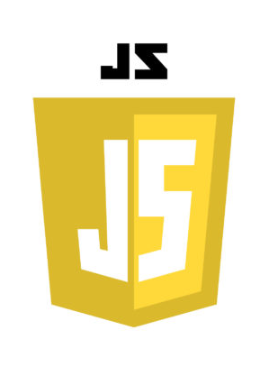
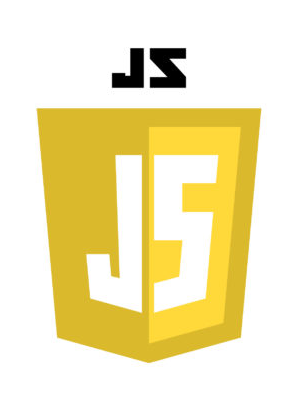
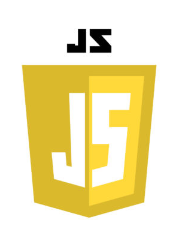

Skill used
반응형 website를 위한 @media Query 반응형에 따른 자연스러운 navigation-bar 구현을 위한 toggle 네비게이션 및 애니메이션을 위한 CSS 페이지 구조화를 위한 HTML을 사용하였습니다. 이 포트폴리오는 저의 가장 큰 장점인 성실함과 더딘 거북이를 컨셉으로 착안하여 만들었습니다.
 

반응형 website를 위한 @media Query 반응형에 따른 자연스러운 navigation-bar 구현을 위한 toggle 네비게이션 및 애니메이션을 위한 CSS 페이지 구조화를 위한 HTML을 사용하였습니다. 이 포트폴리오는 저의 가장 큰 장점인 성실함과 더딘 거북이를 컨셉으로 착안하여 만들었습니다.
